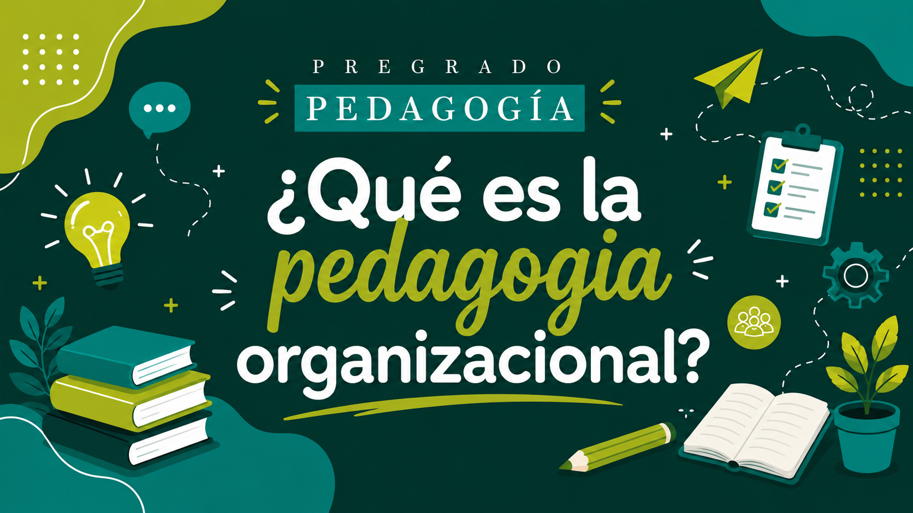

La pedagogía organizacional estudia cómo se aprende, se forma y se acompaña a las personas dentro de empresas, instituciones y comunidades. No se limita a capacitar: busca comprender los contextos, leer necesidades y proponer respuestas pedagógicas con sentido humano y social.
La pedagogía organizacional es un campo de la pedagogía que analiza cómo se aprende, se forma y se acompaña a las personas dentro de organizaciones (empresas, instituciones, ONG, etc.).
Se centra en el talento humano, la gestión del conocimiento, la cultura institucional y el desarrollo de competencias, no solo en "capacitar" sino en formar integralmente.
No solo transmite información técnica. También interpreta contextos, identifica necesidades reales y diseña procesos formativos más pertinentes, humanos y sociales.
En empresas, ONG, universidades, instituciones públicas, procesos comunitarios, cooperativas y cualquier espacio donde se requiera aprender para transformar prácticas.
La mayoría de los procesos se dirigen a personas adultas, por eso la pedagogía organizacional debe considerar la experiencia previa, la autonomía y la utilidad práctica de lo que se aprende.
No trabaja solo con tareas o cargos. También observa valores, relaciones, formas de comunicación y maneras de convivir dentro de la organización.
Cuando una institución cambia (estructura, tecnología, cultura), la pedagogía organiza estrategias para que las personas entiendan, se adapten y participen de manera más consciente.
La organización no aprende una sola vez. Aprende todo el tiempo, y la pedagogía ayuda a que ese aprendizaje se vuelva parte de la vida institucional.
La ciudad tiene un ecosistema diverso de empresas, universidades, fundaciones y sector público, lo que ofrece escenarios reales donde la formación pedagógica puede intervenir con propuestas cercanas al contexto local.
El pedagogo puede apoyar inducción, formación interna, evaluación de aprendizajes, clima organizacional, liderazgo compartido y desarrollo del talento humano.
Ayuda a que la empresa no vea la formación como gasto, sino como inversión en personas, cultura y mejora de procesos, con impacto en la calidad del servicio y en la convivencia interna.
También fortalece procesos educativos internos, acompañamiento a equipos, construcción de sentido de pertenencia y diseño de estrategias para el trabajo colaborativo.
| Área | Qué hace el pedagogo | Resultado esperado |
|---|---|---|
| Inducción | Diseña procesos formativos para nuevos integrantes que conozcan la misión, cultura y procesos de la organización. | Adaptación rápida, pertenencia y claridad de roles. |
| Capacitación | Planea talleres, cursos y acciones formativas ajustadas a necesidades reales. | Mejora del desempeño y del clima laboral. |
| Clima organizacional | Identifica tensiones, estilos de comunicación y necesidades emocionales y relacionales. | Mejor convivencia, comunicación y cooperación. |
| Gestión del conocimiento | Ayuda a sistematizar saberes, experiencias y buenas prácticas de la organización. | Memoria institucional y continuidad en los procesos. |
Identifica necesidades de formación, conflictos, estilos de liderazgo y brechas de comunicación que afectan la organización.
Construye actividades, talleres, estrategias y materiales pensados para adultos, con enfoque práctico y contextualizado.
Orienta los procesos formativos, modera espacios, promueve la participación y acompaña el aprendizaje en el día a día.
Observa si lo formativo produjo cambios reales en prácticas, comunicación y relaciones, y propone ajustes.
"La pedagogía organizacional solo sirve para dar charlas o cursos puntuales."
Es una forma de leer la organización, acompañar a las personas, fortalecer la cultura interna y diseñar aprendizajes con sentido.
"Solo funciona en empresas grandes."
También se aplica en ONG, instituciones educativas, colectivos, fundaciones y proyectos comunitarios.